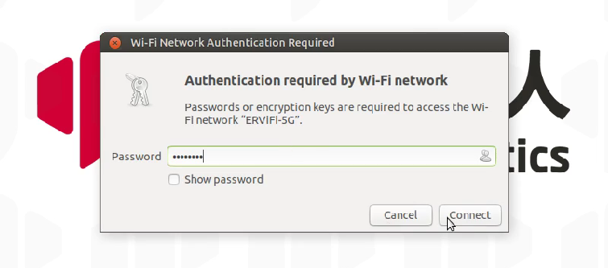
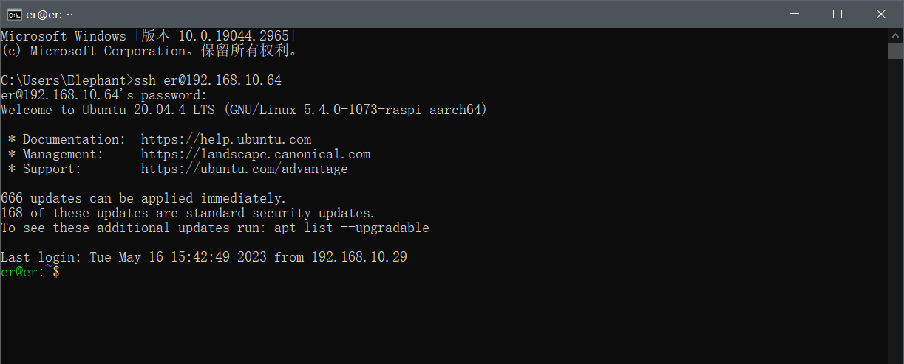
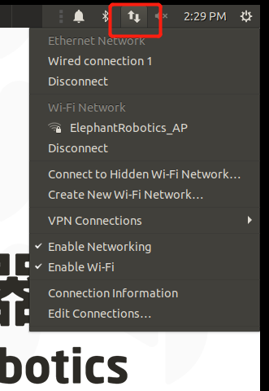
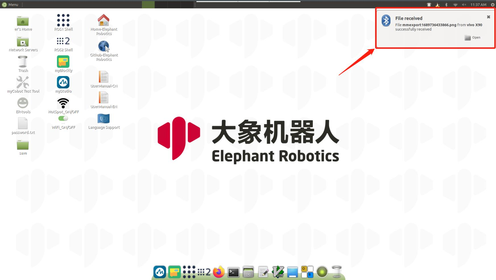
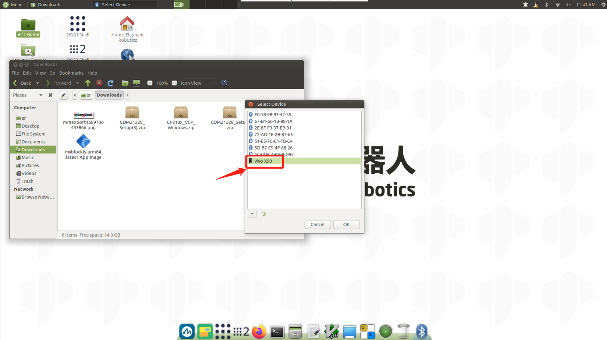

System basic function description
Robot system introduction
System introduction
Ubuntu is the most widely used Linux operating system in personal desktop operating systems. For beginners, it is a good choice to be familiar with the Linux environment or some embedded hardware operating systems. The Ubuntu official website also released a dedicated operating system for Raspberry Pi.

System Function Introduction
myStudio: Firmware burning software, used to update and burn new versions of firmware
myBlockly: Graphical programming software, you can directly drag and drop blocks to form running codes and control the robot arm
ROS1 Shell: Directly enter the compiled ROS1 environment, you can directly enter the corresponding instructions, and run the corresponding ROS1 code
ROS2 Shell: Directly enter the compiled ROS2 environment, you can directly enter the corresponding instructions, and run the corresponding ROS2 code
Github-ElephantRobotics: Elephant Robotics official open source code repository
Home-ElephantRobotics: Elephant Robotics official website homepage
UserManual - CN/EN: Machine manual, including all content about robot arm control
WiFi_ON/OFF: WiFi switch, click to turn on/off WiFi function
HotSpot_ON/OFF: Hotspot switch, click to turn on/off hotspot function, the hotspot name after turning on is ElephantRobotics_AP_XXXX
Language Support: System language setting, click to enter the system language setting interface
System password description
Power-on account password & VNC connection password & SSH connection password & administrator account password
Unified as: Elephant
How to define a new password
Change account password
Use shortcut keys
ctrl + alt + Tto open the terminalEnter
passwdto modify the account passwordEnter the new password twice
Change VNC connection password
Use shortcut keys
ctrl + alt + Tto open the terminalEnter
vncpasswdto modify the account passwordEnter the new password twice
Change SSH connection password
The SSH remote connection enters the administrator account password, no need to modify it separately
Change the administrator account password
Use shortcut keys
ctrl + alt + Tto open the terminalEnter
sudo passwdto modify the account passwordEnter the new password twice
VNC
VNC function introduction
It is a remote control software, generally used to remotely solve computer problems or software debugging
VNC port description
The robot arm and PC are connected to the same WiFi, and the robot arm IP address is the port
Connect VNC
There are two ways to connect. The first way requires an external monitor to perform some operations on the system. The specific steps are as follows:
First click "Disconnect" to turn off the default hotspot

Click "Enable Wi-Fi" and wait for the currently available WiFi to be displayed

Click the WiFi you want to connect to and enter the WiFi password

After the connection is successful, click "Connection Information" to query the current IP address of the robot

As shown in the example, "192.168.10.64" is the current IP address of the robot

Connect your computer and the robot's WiFi to the same WiFi and open VNC viewer software, enter this IP address (in the above case, enter 192.168.10.64) and press Enter. The password is Elephant. The user name is not filled in by default. The successful connection example is as follows:
.png)
- The second method does not require connecting to the display screen. Directly connect the PC to the Ubuntu system hotspot for remote control. However, this connection method does not have the function of surfing the Internet. It can only remotely control the robotic arm system. The specific steps are as follows:
PC selects to connect to the Ubuntu system hotspot ElephantRobotics_AP_XXXX, and enters the password Elephant
.png)
Open the VNC viewer software, enter the IP address 10.42.0.1, and then press Enter. The password is Elephant. The user name is not filled in by default. The successful connection example is as follows:
.png)
How to improve fluency
The fluency of remote connection depends on the fluency of the connected WiFi. It is recommended to connect to a stable WiFi for remote control
SSH
SSH Function Introduction
Simply put, SSH is a network protocol used for encrypted login between computers. If a user logs in to another remote computer from a local computer using the SSH protocol, we can assume that this login is secure, and even if it is intercepted in the middle, the password will not be leaked.
SSH port description
Default port is 22, no need to change
SSH first connection
Follow 2.3 VNC to confirm the IP address of the robot
Press
win + Ron the personal computer to open the run interface, and entercmdin the input box
- After entering, click OK to open the shell interface

- Enter
ssh er@IP address, then press Enter (the IP address is mainly displayed on the robot arm, the picture is just an example)
- Enter the password
Elephant As shown in the above picture, the remote ssh connection to the robot arm has been successfully completed
How to improve fluency
The fluency of the remote connection depends on the fluency of the connected WiFi. It is recommended to connect to a stable WiFi for remote control
Network configuration
Use of default AP
After the robot is turned on, the system will connect to the hotspot emitted by the Raspberry Pi by default. The hotspot name is ElephantRobotics_AP_XXXX, and the IP address is 10.42.0.1. This hotspot does not have the function of surfing the Internet, and the transmission rate and amount of information are limited, so there will be some distortion and color difference in the final image, and the communication transmission will also be delayed, which is a normal phenomenon.
Connect to WLAN
First click "Disconnect" to turn off the default hotspot
Click "Enable Wi-Fi" and wait for the currently available WiFi to be displayed

Click the WiFi you want to connect to and enter the WiFi password

After the connection is successful, click "Connection Information" to query the current IP address of the robot arm

As shown in the example, “192.168.10.64” is the current IP address of the robot

- Connect to a wired network
After the robot is turned on, it connects to the system-configured hotspot by default: ElephantRobotics_AP_XXXX

Click “Disconnect” to disconnect the default hotspot connection
.PNG)
Connect the network cable to the network port of the robot

Connect a regular Internet cable to the network port of the robot

- How to set the default IP address
Use the shortcut keys ctrl + alt + T to open the terminal, enter sudo vim /etc/netplan/01-network-manager-all.yaml, and modify the 01-network-manager-all.yaml file to the following content

After the modification is completed, enter sudo netplan apply to make the configuration effective
- How to automatically assign IP addresses
When the system is connected to WiFi, the IP address is automatically assigned without any settings. If you want to change from a fixed IP address to an automatically assigned IP address, modify the /etc/netplan/01-network-manager-all.yaml file to the following content

After the modification is completed, enter sudo netplan apply to make the configuration effective
Bluetooth configuration
- The Bluetooth of the robot system is turned on by default. You can search it directly with a PC/mobile phone and open the Bluetooth search. As shown in the figure, the default name of Bluetooth is MyCobot-Pi

Transfer files from PC/mobile phone to robot
Select the file you want to transfer via Bluetooth and use Bluetooth to transfer
Operate in the robot system and select to receive the file

- Wait for Bluetooth transmission to complete

- You can see the files transferred by Bluetooth in the /home/er/Downloads folder

Transfer files from the robot system to the PC/mobile phone
Click the Bluetooth icon in the system and select Send Files to Device in the drop-down display box
 - Select PC/mobile phone
- Select PC/mobile phone

 - On the PC/mobile phone, allow receiving files to transmit information from the robot arm to the mobile phone
- On the PC/mobile phone, allow receiving files to transmit information from the robot arm to the mobile phone
Language Configuration
- How to switch languages
Click Language Support on the desktop to enter the language switching interface, drag the language you want to change to the top, and restart the system

- How to download languages
Click Language Support on the desktop to enter the language switching interface, drag the language you want to change to the top, and restart the system
- How to download languages
Click Language SupportEnter the language switching interface, select the language, click Download, and enter the passwordElephant

System resolution switching
- Click the icon in the upper right corner of the screen, select System Settings, and enter the system control panel


- Select Display and enter the resolution selection page

- Switch to select the resolution, click Apply to view the display effect, if it meets the requirements, click Keep this Configuration


python
- Introduction to Python for the robot system
Python3.8 is installed in the system, no need to install it yourself
Already in accordance with Python dependencies:
| Package | Version |
|---|---|
| pymycobot | 3.0.9 |
| pyserial | 3.5 |
| numpy | 1.23.5 |
| opencv-contrib-python | 4.7.0.72 |
| rospkg | 1.4.0 |
| rospkg-modules | 1.4.0 |
- First time using python
You can try this code in the input box:
print ("Hello World!")
- Running robot case code
For specific case codes, please refer to the Python chapter. Simply copy the code in the case and use it.